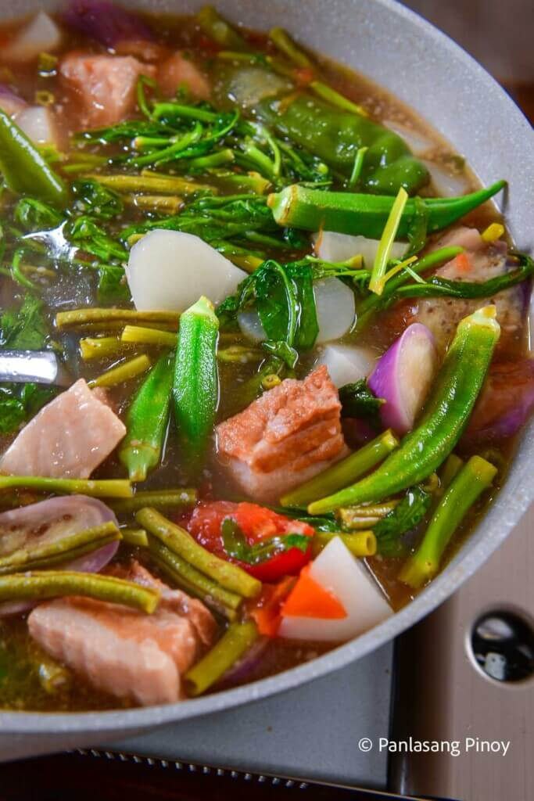

Pork Sinigang

Sinigang is a popular Filipino soup or stew known for its sour and savory flavor. In this recipe, we'll use pork as its main ingredient.
We can use any kind of meat or seafood - pork, beef, chicken, fish, or shrimp. If you use chicken as the main ingredient, we call that dish Sinampalukang Manok.
Ingredients
- 1 kg Pork liempo - cut into smaller pieces
- 500g young tamarind - Note: You may also use sinigang mix if fresh young tamarinds are not available in your area.
- 1 bunch kangkong - leaves removed and stems chopped
- 1 bunch string beans - cut into 2-inch pieces
- 2 pieces eggplants - sliced into thin pieces
- 1 piece radish - sliced into thin pieces
- 1 bunch okras - cut into smaller pieces
- 2-3 pieces medium-sized taro or gabi in Tagalog - cut into wedges
- 2-3 pieces tomatoes - sliced into smaller pieces
- 2 pieces long green peppers or siling pangsigang
- 1 piece onion - cut into smaller pieces
- 5-6 cloves of garlic - minced
- 2 liters water
- Fish sauce and ground black pepper to taste
Steps
- Boil the young tamarind in 2 liters of water for 40 minutes. Filter the tamarind broth using a strainer. Squeeze the tamarind afterwards to extract its remaining juices. Note: You may skip this step if young tamarinds are not available. Proceed to step 2.
500g young tamarind, 2 liters water
- In another pot, saute garlic and onion. Once the aromatics are golden brown, add the tomatoes. Once the tomatoes are soft, add the pork liempo.
1 kg pork liempo, 1 piece onion, 5-6 cloves of garlic, 2-3 pieces of tomatoes
- Once the meat is golden brown, pour the tamarind broth* and add taro and pork cubes (optional). Let it boil for about 30 minutes. Skim off the floating scums (the blackish/grayish foam floating on top of the soup). Pour 1 tablespoon fish sauce and ground pepper to taste, cover, and simmer for another 30 to 45 minutes.
*In case you're using sinigang mix, pour the 2 liters of water and add sinigang mix.
2-3 pieces medium-sized taro, 1 tablespoon fish sauce, ground black pepper, 1 piece pork cubes (optional)
- Test the tenderness of the meat using pork. Once the meat is easy to pierce using pork, add radish and eggplants. Cook for 5 minutes.
1 piece radish, 2 pieces eggplants
- Add the string beans and okras. You may now also add the long green peppers. Cook for 2-3 minutes.
1 bunch string beans, 1 bunch okras, 2 pieces long green peppers
- Add the chopped kangkong stems. Add salt and pepper to taste. Cook for 1 to 2 minutes
chopped kangkong stems, salt and pepper to taste
- Add the kangkong leaves. Cover and turn the heat off. Let the residual heat cook the leaves for 3 to 5 minutes before serving.
kangkong leaves
- Enjoy your dish with hot rice and fish sauce with chopped wild chilis (siling labuyo).